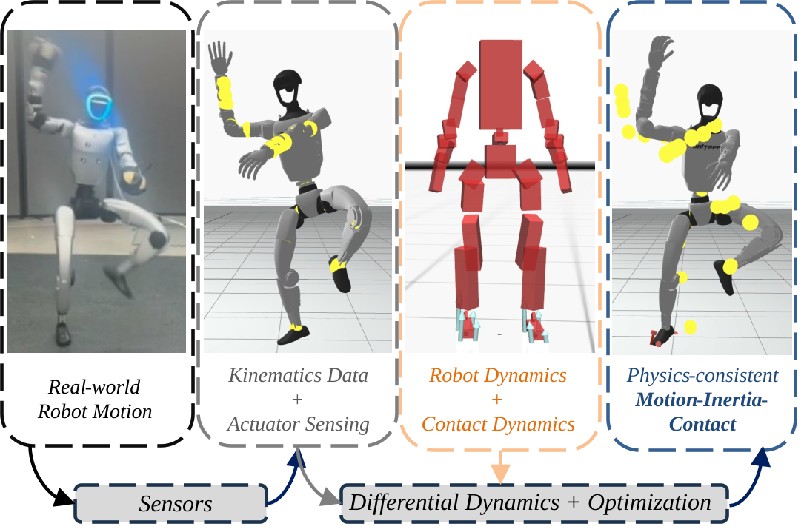
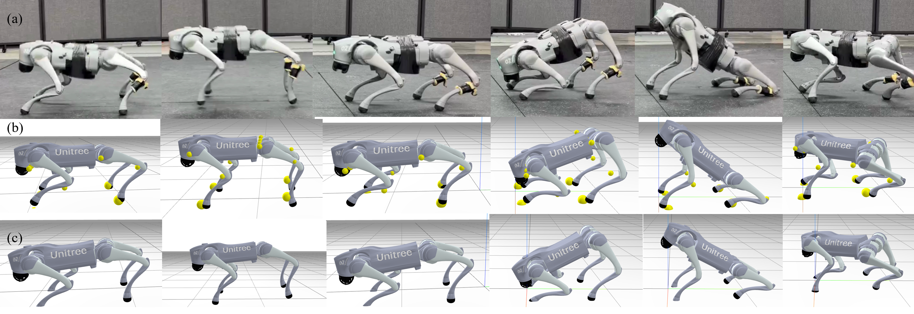
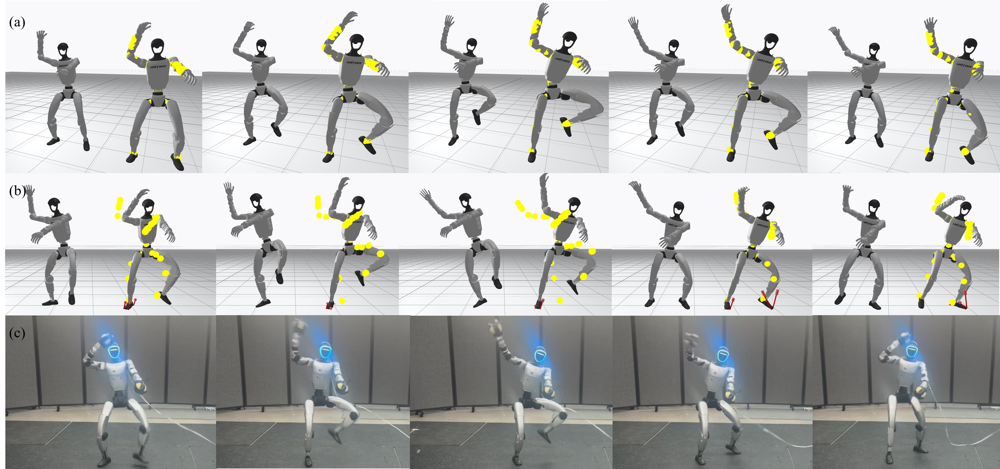
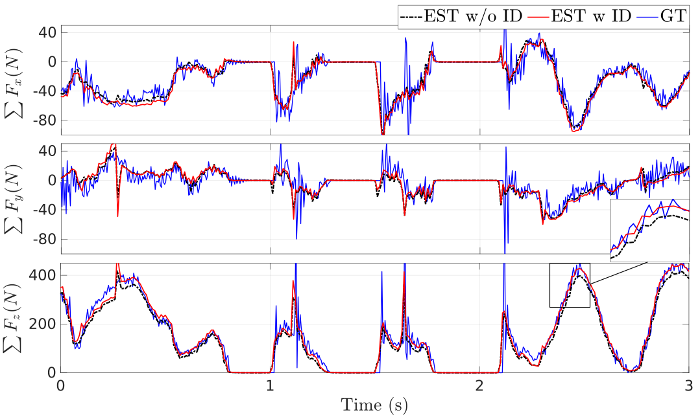
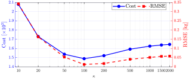
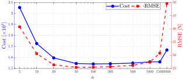

Robotics: Science and Systems (RSS) 2026
Humanoid and legged robots interact with the environment through intermittent contacts, making accurate motion estimation fundamentally dependent on reasoning about contact dynamics. However, standard sensing pipelines—whether based on onboard proprioception with Extended Kalman Filters (EKFs) or external motion capture systems—recover only kinematics, while contact forces, contact timing, and inertial parameters remain unobserved. As a result, purely kinematic reconstructions often violate rigid-body dynamics, particularly during contact-rich motions.
To enable accurate motion estimation from onboard kinematics in real-world deployment, we propose PRIME (Physically-consistent Robotic Inertial and Motion Estimation), a Maximum A Posteriori formulation that refines measured kinematics and actuator commands into a dynamically consistent trajectory while jointly estimating frictional contact forces and physically consistent inertial parameters. Our approach incorporates differentiable contact dynamics with smoothed complementarity constraints and an Anitescu-style friction model, yielding a smooth optimization problem that remains stable across contact transitions.
We evaluate PRIME on contact-rich locomotion with quadrupedal robots and the Unitree G1 humanoid, demonstrating improved trajectory consistency and accurate inertial parameter identification. Beyond improving model-based estimation and control with calibrated inertial parameters, PRIME produces force- and contact-annotated motion reconstructions from real robots in deployment, which can be used to provide high-quality data for downstream learning applications, including large-scale behavior modeling and robot foundation models.

PRIME uses differentiable contact dynamics within a Maximum A Posteriori framework to jointly estimate physics-consistent motion trajectories, inertial parameters, and contact from real robot data.
Across quadruped and humanoid experiments, PRIME converts long-horizon (10s) raw kinematics and actuator sensing into reconstructions that remain consistent with real-world data, rigid-body dynamics, and contact.

Quadrupedal Go2 results show PRIME reconstructing dynamically consistent motion and contact during diverse locomotion with a 4.6 kg payload attached beneath the torso.

Real and simulated G1 experiments illustrate PRIME correcting contact-inconsistent kinematics and recovering physically consistent whole-body motion.
| \(\mathrm{Parameter}\) | \(\mathrm{Original}\) \(\mathrm{Values}\) |
\(\mathrm{Simulation}\) \(m\ (+3\,\mathrm{kg})\) |
\(\mathrm{Simulation}\) \(c_z\ (-0.1\,\mathrm{m})\) |
\(\mathrm{Real\mbox{-}world}\) \(m\ (+4.6\,\mathrm{kg})\) |
|---|---|---|---|---|
| \(m\ [\mathrm{kg}]\) | \(6.927\) | \(9.975\) | \(6.865\) | \(11.740\) |
| \(c_x\ [\mathrm{m}]\) | \(0.022\) | \(0.034\) | \(0.242\) | \(0.037\) |
| \(c_y\ [\mathrm{m}]\) | \(0.000\) | \(0.138\) | \(0.089\) | \(0.004\) |
| \(c_z\ [\mathrm{m}]\) | \(-0.005\) | \(-0.012\) | \(-0.105\) | \(-0.013\) |
| \(I_{xx}\) | \(0.025\) | \(0.033\) | \(0.024\) | \(0.014\) |
| \(I_{yy}\) | \(0.098\) | \(0.138\) | \(0.089\) | \(0.274\) |
| \(I_{zz}\) | \(0.108\) | \(0.150\) | \(0.097\) | \(0.274\) |
| \(\mathrm{Parameter}\) | \(\mathrm{Original}\) \(\mathrm{Values}\) | \(\mathrm{Real\mbox{-}world}\) \(\mathit{Total\ weight}\ (+2.91\,\mathrm{kg})\) |
|---|---|---|
| \(m\ [\mathrm{kg}]\) | \(9.60\) | \(13.02\) |
| \(c_x\ [\mathrm{m}]\) | \(0.00332\) | \(0.03186\) |
| \(c_y\ [\mathrm{m}]\) | \(0.0003\) | \(-0.0165\) |
| \(c_z\ [\mathrm{m}]\) | \(0.1798\) | \(0.1775\) |
| \(I_{xx}\) | \(0.1241\) | \(0.2669\) |
| \(I_{yy}\) | \(0.1121\) | \(0.3075\) |
| \(I_{zz}\) | \(0.0327\) | \(0.1097\) |

| \(\mathrm{Estimation}\) \(\mathrm{Metric}\) |
\(\mathbf{With\ ID}\) | \(\mathrm{W/O\ ID}\) |
|---|---|---|
| \(\mathrm{RMSE}_F\ [\mathrm{N}]\) | \(24.486\) | \(26.141\) |
| \(\mathrm{Cost}\ [\times 10^3]\) | \(1.016\) | \(1.880\) |
Analytic smoothing improves optimization convergence while accommodating noise and uncertainty, which in turn supports more reliable identification and F/T-sensorless force estimation.


@article{prime2026,
title = {PRIME: Physically-consistent Robotic Inertial and Motion Estimation for Legged and Humanoid Robots},
author = {Kang, Jiarong and Ren, Kunzhao and Pang, Tao and Xiong, Xiaobin},
journal = {Preprint},
year = {2026}
}